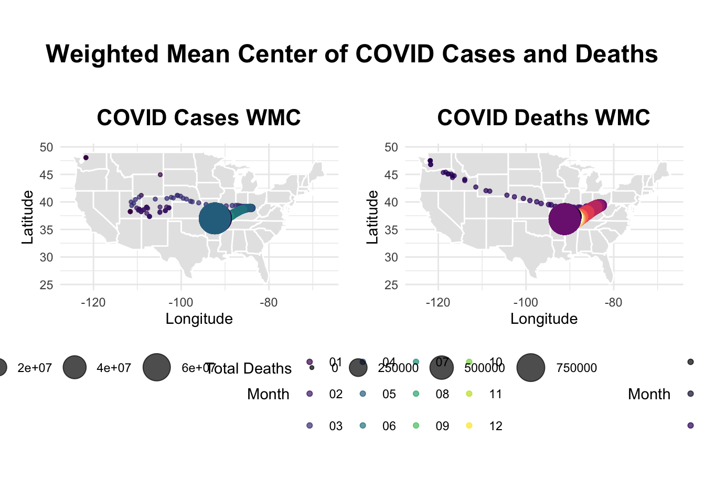
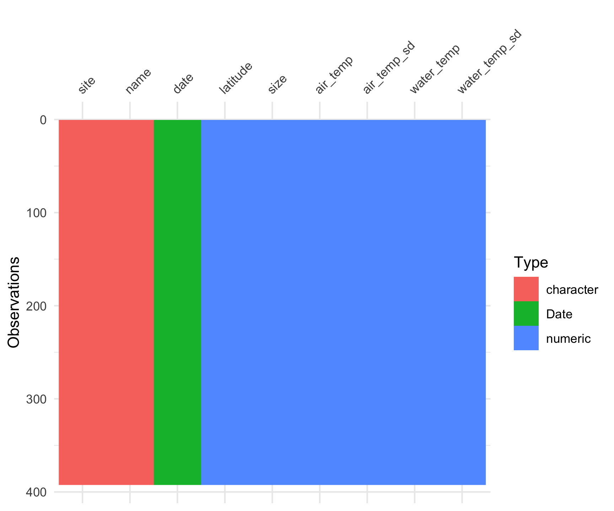
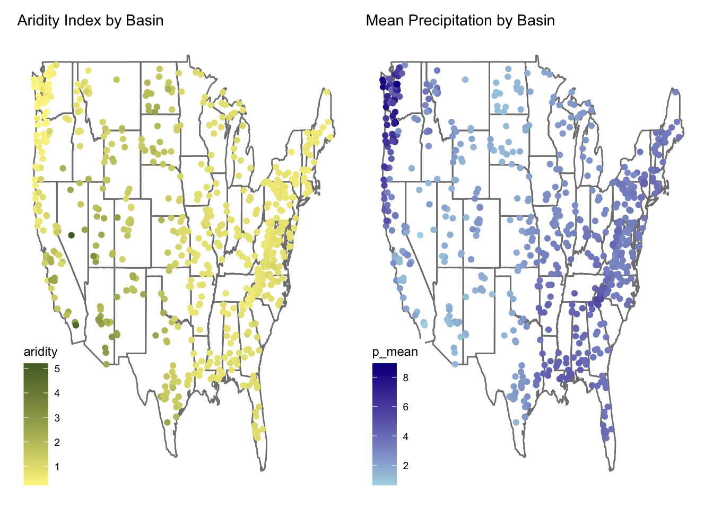
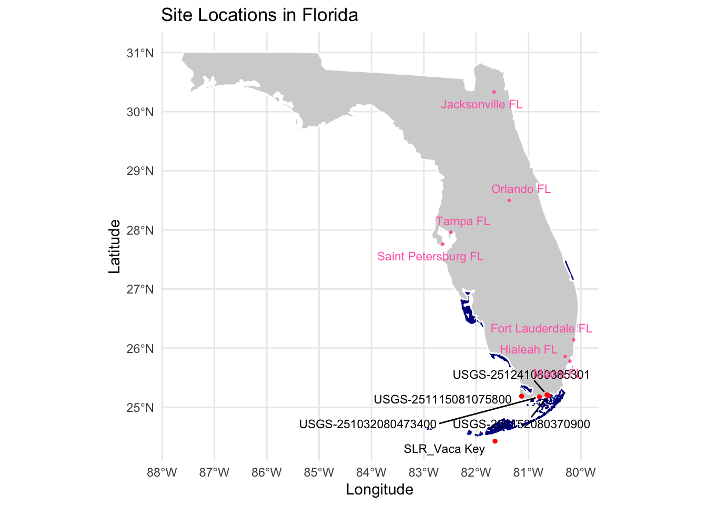
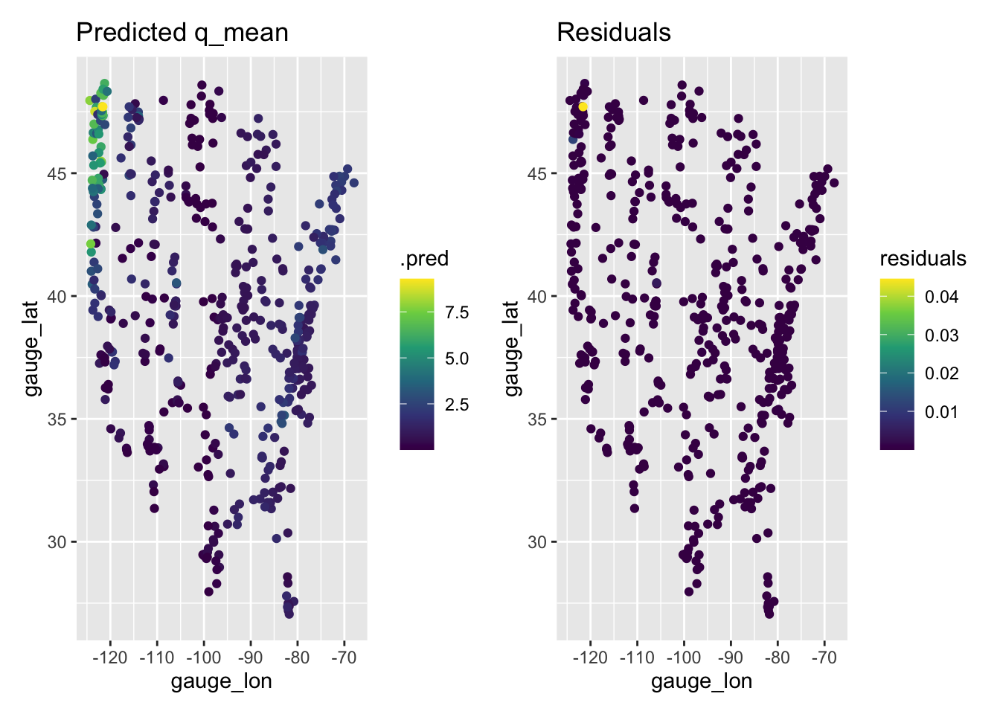
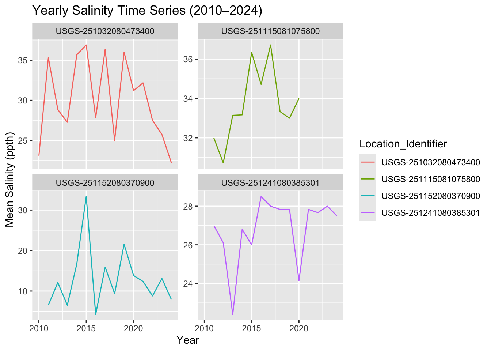
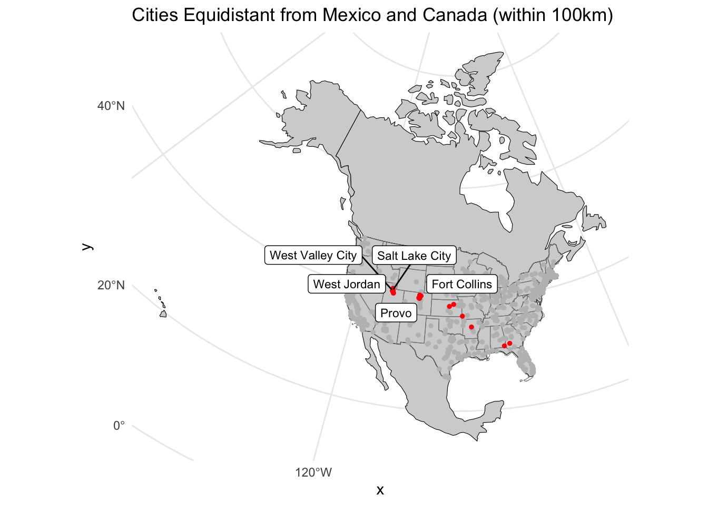
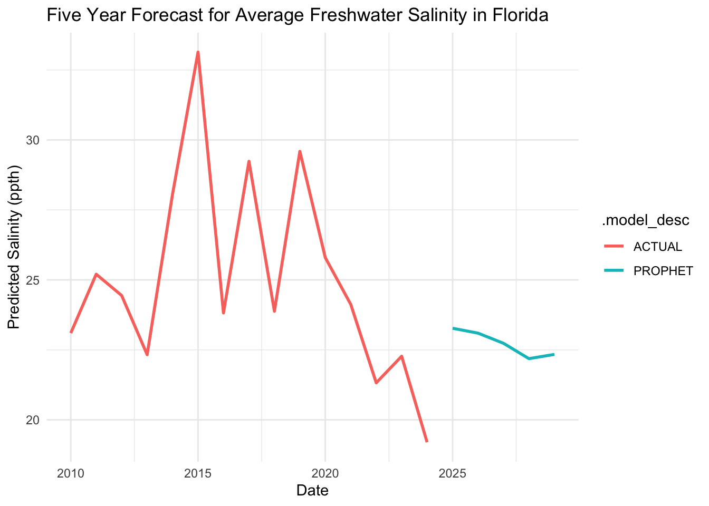

knitr::include_graphics("https://c8.alamy.com/comp/AFJT90/trembling-aspen-populus-tremuloides-trees-in-autumn-in-the-cariboo-AFJT90.jpg")
In Spring 2025, I’m taking a Quantitative Reasoning class focused on R programming and data science. Here’s a collection of my project work that demonstrates my growing expertise in data analysis and visualization.
This project showcases my ability to:
The complete source code is available in the linked GitHub repository, demonstrating my commitment to open-source development and reproducible research practices.
knitr::include_graphics("https://c8.alamy.com/comp/AFJT90/trembling-aspen-populus-tremuloides-trees-in-autumn-in-the-cariboo-AFJT90.jpg")
This lab focused on data manipulation using dplyr. Key learnings included: - Using dplyr verbs for data transformation - Understanding pipe operations and data flow - Grouping and summarizing data - Working with time series data - Analyzing tree growth patterns
knitr::include_graphics("images/unnamed-chunk-8-1.png")
From this lab, I learned several important concepts about analyzing COVID-19 data:
The lab demonstrated how data science and visualization techniques can be applied to understand complex public health issues and track their evolution over time and space.
knitr::include_graphics("images/download-4.png")
This lab introduced foundational statistical techniques using ecological data from the Long-Term Ecological Research (LTER) Network, focusing on both univariate and multivariate methods. In Part 1, we applied chi-square tests to explore associations between categorical variables like forest type and stream unit for species such as Cutthroat trout and Coastal Giant Salamanders. We then conducted t-tests to compare species biomass between forest treatments, emphasizing the importance of checking assumptions like normality and variance equality. Correlation analyses were used to examine relationships between continuous traits like body length and weight, applying log transformations when needed. In Part 2, we expanded into multivariate statistics, using ANOVA and post-hoc Tukey tests to assess differences in crab size across 13 sites, followed by linear and multiple regression models to test hypotheses such as Bergmann’s rule. Throughout the lab, we emphasized rigorous assumption testing and interpretation of results in scientific terms, reinforcing the importance of careful data exploration and appropriate model selection in ecological research.
knitr::include_graphics("images/Screen Shot 2025-05-14 at 1.27.54 PM.jpeg")
In doing this proposal, I learned how to understand the Link Between Urbanization and Biodiversity in a deeper level, I learned that biodiversity loss isn’t just about species disappearing—it’s also about ecosystems becoming less unique and more uniform. I gained experience formulating a clear and testable hypothesis, I practiced breaking down a complex topic into specific, measurable objectives and connecting them logically to a proposed method, I also learned how to combine datasets (iNaturalist species data with land use maps from USGS) to explore spatial patterns in biodiversity.
This taught me the importance of data overlay and classification when trying to categorize environments like urban, suburban, and rural. I realized how platforms like iNaturalist are revolutionizing research by enabling access to crowdsourced biodiversity observations, especially across large areas like entire cities. This project showed me how urban planning, ecology, and data science come together when addressing environmental issues.
knitr::include_graphics("images/unnamed-chunk-2-1.png")
Through this lab, I learned how to integrate machine learning methods into hydrological analysis by working with the CAMELS dataset. I gained practical experience using R to preprocess and model hydrologic variables, specifically streamflow, based on key climate indicators like aridity and precipitation. I developed skills in spatial visualization by creating thematic maps, and I learned how to build and compare different models—linear regression, XGBoost, and neural networks—within a tidy workflow. Understanding how to split data, tune preprocessing recipes, and evaluate model performance using metrics like RMSE and R² deepened my grasp of predictive modeling. This lab also reinforced the value of using cross-validation to compare model robustness, and taught me how machine learning can support environmental decision-making by revealing complex relationships in hydroclimatic systems.
knitr::include_graphics("images/download.png")
In our project, we aimed to explore how rising sea levels—driven by climate change—impact the quality of freshwater systems through saltwater intrusion. We hypothesized that increasing sea levels in Southern Florida from 2010 to 2024 would correlate with elevated salinity levels in nearby freshwater sources, thus degrading water quality. To test this, we compiled sea level data from NOAA’s Vaca Key gauge and salinity data from four nearby USGS gauges. We then cleaned and filtered the datasets to focus only on the 2010–2024 period. Our methodology included geospatial mapping of the gauges, time series visualizations, a Prophet model to forecast future salinity trends, faceted scatterplots for visual comparison, and Spearman’s correlation tests to evaluate the statistical relationship between sea level rise and freshwater salinity. These tools provided a multifaceted approach to identifying potential patterns and correlations in the data.
knitr::include_graphics("images/map-predictions-1.png")
In this hyperparameter tuning lab using the CAMELS dataset, I processed multiple watershed datasets, merged them by gauge ID, and cleaned the data to remove missing values. I applied feature engineering and resampling using a 10-fold cross-validation framework and tested three regression models—Linear Regression, Random Forest, and XGBoost—to predict mean streamflow (q_mean). While the linear model failed due to unseen factor levels, Random Forest achieved strong performance (RMSE ≈ 1.10, R² ≈ 0.88), and XGBoost outperformed all (RMSE ≈ 0.19, R² ≈ 0.99). I then fine-tuned XGBoost using a Latin hypercube sampling grid and identified the optimal hyperparameters (555 trees, depth 6, min_n 9, learn_rate ≈ 0.059). The final model was validated on the test set, achieving excellent predictive accuracy (RMSE = 0.126, R² = 0.993). Lastly, I visualized spatial predictions and residuals to assess model generalization across watersheds, highlighting the power of gradient boosting in hydrologic modeling.
knitr::include_graphics("images/download-1.png")
Our results revealed that, while sea level has shown a steady increase over the past 14 years, salinity levels across the four USGS gauges varied significantly over time and between locations. Some gauges exhibited increasing salinity trends, others declined or fluctuated without clear direction. The Prophet forecast model predicted relatively stable salinity through 2029, and Spearman’s correlation tests indicated no statistically significant relationship between sea level rise and salinity (p > 0.05 for all gauges). These findings suggest that surface water salinity in Southern Florida is influenced by more than just sea level—factors like local hydrogeology, land use, water management infrastructure, and precipitation likely play critical roles. Our results contrast with studies that show strong correlations in coastal aquifers and estuaries, suggesting that surface water systems may exhibit greater resilience or be more regulated. However, the limitations of our study, including reliance on single gauges and limited variables, underscore the need for more integrated, multivariable analyses in the future.
knitr::include_graphics("images/download-2.png")
In Lab 10, I used geospatial analysis in R to evaluate how far U.S. cities are from national and state borders, including the Canadian and Mexican frontiers. After acquiring and transforming boundary data for the U.S., Canada, and Mexico, I processed the us.cities dataset to calculate the distance of each city to key geographic features using sf and st_distance. I then identified the five cities farthest from each border type and visualized patterns through gradient maps and labeled plots. Notably, cities in Kansas were the most distant from national borders, while central Texas cities were furthest from state lines. I also highlighted cities roughly equidistant from Canada and Mexico and analyzed the “border zone” (cities within 100 miles of a national boundary), revealing that 58% of the U.S. population resides in this region. This lab deepened my understanding of spatial data manipulation, map creation, and how geographic proximity relates to population distribution.
knitr::include_graphics("images/download-3.png")
Presenting this project allowed us to synthesize complex environmental data and communicate the nuanced relationship between sea level rise and freshwater quality in a compelling and visual format. It reinforced the importance of using multiple analytical approaches—from statistical tests to forecasting models—to understand climate impacts in coastal regions. Through this work, we strengthened our skills in data wrangling, spatial analysis, and scientific communication. Despite not finding a significant correlation, the process highlighted the value of long-term monitoring and the need for proactive planning to protect vulnerable freshwater systems. Ultimately, this project deepened our understanding of the challenges facing coastal water resources in a changing climate and emphasized the importance of interdisciplinary approaches in environmental science.